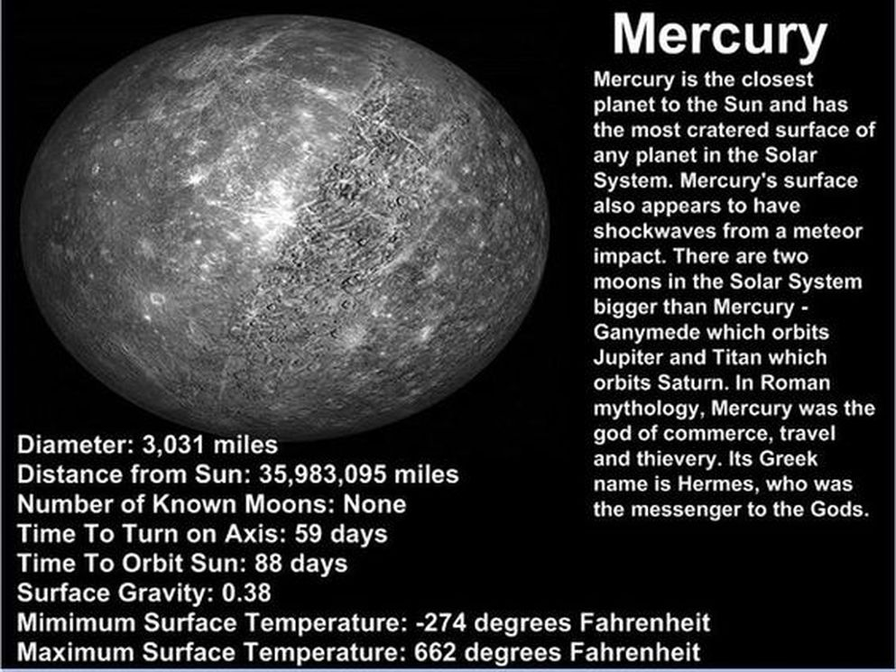

Mercury
Welcome to planet Mercury! This is the smallest planet in the entire Sol system. It is the closest orbiting planet to our sun; by extension, it is also the hottest planet within our solar system. The closer a planet is to the sun, the faster it moves on its orbit. Mercury moves at roughly 29 miles per second within its orbit around the sun. This planet has the highest temperature extremes in the entire solar system due to its close proximity to the sun. The planet has no moons nor any rings. It is what is considered a terrestrial planet, meaning it is very rocky in nature. Life as we know it could not possibly exist on mercury due to the extreme heat and pressure. If you want to learn more about mercury, visit Nasa's website for further information.
